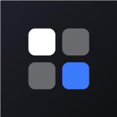

Meu QGFinanças, demandas, agenda, rotina, saúde, estudos e conteúdo
Instale o seu QG
Funciona como um app de verdade: ícone na tela, abre em tela cheia e funciona sem internet. Leva 30 segundos.
Toque para instalar. Se nada abrir, siga os passos abaixo.
No iPhone a instalação só funciona pelo Safari. Copie o link e abra no Safari.
- Toque em Compartilhar, na barra de baixo do Safari.
- Role e toque em Adicionar à Tela de Início .
- Toque em Adicionar. O ícone do Meu QG aparece na sua tela, é só abrir por ele.
- Abra este link no Chrome.
- Toque no menu no canto de cima.
- Toque em Instalar app (ou Adicionar à tela inicial) e confirme.
- Abra este link no Chrome ou no Edge.
- Clique no ícone de instalar na barra de endereço (ou menu > Instalar Meu QG).
- Pronto: o Meu QG ganha ícone próprio e abre numa janela só dele.
Abra pelo ícone na sua tela.
Seus dados ficam só no seu aparelho.